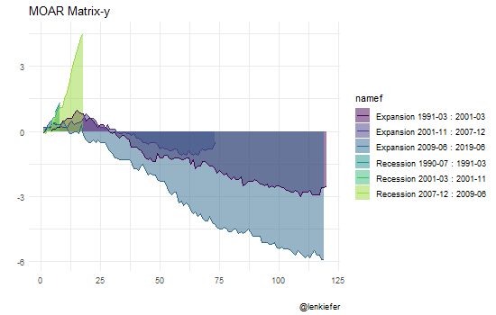

Last week I posted a long thread comparing trends in various housing market indicators over on Twitter:
Assuming we aren't in recession right now, the current expansion will tie the 1990s expansion for longest in U.S. history. Let's take a look at how housing markets have behaved in this expansion relative to earlier ones
— 📈 Len Kiefer 📊 (@lenkiefer) June 12, 2019
a thread... pic.twitter.com/ovaiq3lsA8
I followed it up with an article on LinkedIn with some more commentary The U.S. housing market over two long economic expansions.
In this post I’m going to share some modified R code to make plots like I shared. I’m also going to try out some of the new features in the new release of ggplot2, so you’ll need to make sure you have at least version 3.2.0 to follow along at home.
First we’re going to want to leverage our most important data science skill and count. Specifically, we are going to count the number of months since the lastest business cycle turning points per NBER. We’re modifying some code we used in our Expanding Expansions, Contracting Recession post.
Get data, wrangle
We’ll get the data via the St Louis Fed’s FRED and the tidyquant package.
Click for data wrangling code
#####################################################################################
## Load libraries ----
#####################################################################################
library(tidyquant)
library(tidyverse)
library(lubridate)
library(sqldf)
library(cowplot)
theme_set(theme_minimal()) # reset GGPLOT2 theme to theme_minimal()
#####################################################################################
## get data ----
#####################################################################################
# Fred symbols
tickers=c("UNRATE",
"FEDFUNDS",
"GS10",
"HSN1F",
"MSACSR",
"HOUST",
"HOUST1F",
"HOUST5F",
"PAYEMS",
"HPIPONM226S",
"LXXRHTSA",
"LXXRLTSA",
"LXXRMTSA",
"LXXRSA",
"ATXRHTSA",
"ATXRLTSA",
"ATXRMTSA",
"ATXRSA",
"TTLHHM156N",
"USREC",
"MORTGAGE30US",
"T10Y3MM")
# Human readable descriptions
lookup_1 <- c("Unemployment Rate (%)",
"Federal Funds Effective Rate (%)",
"10-Year Treasury Constant Maturity Rate (%)",
"New One Family Houses Sold (1000s SAAR)",
"Monthly Supply of New Houses for Sale (Months)",
"Housing Starts (total, 1000s SAAR)",
"Housing Starts (1-unit structures, 1000s SAAR)",
"Housing Starts: (5-Unit Structures or More, 1000s SAAR)",
"Total Nonfarm Employment (1000s, SA)",
"House Price Index for U.S. (FHFA purchase-only, SA)",
"Home Price Index (High Tier) for Los Angeles, California",
"Home Price Index (Low Tier) for Los Angeles, California",
"Home Price Index (Middle Tier) for Los Angeles, California",
"S&P/Case-Shiller CA-Los Angeles Home Price Index",
"Home Price Index (High Tier) for Atlanta, Georgia",
"Home Price Index (Low Tier) for Atlanta, Georgia",
"Home Price Index (Middle Tier) for Atlanta, Georgia",
"S&P/Case-Shiller GA-Atlanta Home Price Index",
"Household Estimates (Thousands)",
"NBER based Recession Indicator for the United States",
"30-Year Fixed Rate Mortgage Average in the United States",
"10-Year Treasury Constant Maturity Minus 3-Month Treasury Constant Maturity")
# Get data, convert weekly mortgage rate data to monhtly average
dfm <-
tidyquant::tq_get(tickers,get="economic.data",from="1954-01-01") %>%
group_by(year=year(date),month=month(date), symbol) %>%
summarize(price=mean(price)) %>% ungroup() %>%
mutate(date=as.Date(ISOdate(year,month,1)))
lookup <- data.frame(symbol=tickers, description=lookup_1)
df <- merge(dfm,lookup,by="symbol")
#####################################################################################
## setup recession data frame via https://www.nber.org/cycles.html ----
#####################################################################################
recessions.df = read.table(textConnection(
"Peak, Trough
1953-07-01, 1954-05-01
1957-08-01, 1958-04-01
1960-04-01, 1961-02-01
1969-12-01, 1970-11-01
1973-11-01, 1975-03-01
1980-01-01, 1980-07-01
1981-07-01, 1982-11-01
1990-07-01, 1991-03-01
2001-03-01, 2001-11-01
2007-12-01, 2009-06-01
2019-06-02, 2019-06-03" # have expansion last until 2019 June
), sep=',',
colClasses=c('Date', 'Date'), header=TRUE)Now to set up the data we’re going to need to merge back on dates and count intervals between months. We’ll use sqldf to do some merging via SQL like syntax and then lubridate to count intervals in months.
We’re also going to compute the value of each variable in the month of the turning point (June 2009 for the current expansion). Then we’ll compute two indicators, the difference in the variable since the start of the cycle to the current date and an indexed value so the starting point equals 100.
dft<- data.frame(date=seq.Date(as.Date("1954-01-01"),
as.Date("2019-06-01"),
by="1 month"))
rdf <- recessions.df %>%
mutate(TroughLag = lag(Trough), # find last trough
PeakLag = lag(Peak) # find last peak
)
# Merge with sqldf
output <- sqldf("select * from dft left join rdf
on (dft.date>=rdf.Peak and dft.date <= rdf.Trough or
(dft.date > rdf.TroughLag and dft.date <= rdf.Peak)) ") %>%
mutate(expand=ifelse(date>Peak, "Recession","Expansion"),
tt=ifelse(date>Peak, (interval(Peak,date) %/% months(1)),
interval(TroughLag,date) %/% months(1) ),
d1=as.Date(ifelse(expand=="Recession",Peak, TroughLag %m+% months(0))),
d2=as.Date(ifelse(expand=="Recession",Trough, Peak %m-% months(0))),
name=paste0(expand, " ",
as.character(d1, format="%b %Y"), " : ",
as.character(d2, format="%b %Y")),
name2=paste0(expand, " ",
as.character(d1, format="%Y-%m"), " : ",
as.character(d2, format="%Y-%m")
)) %>%
# relabel the last row to say :present
mutate(name=ifelse(name=="Expansion Jul 2009 : Jun 2019",
"Expansion Jul 2009 : Present", name)) %>%
mutate(namef=as.factor(name2))%>%
select(name,date,Peak,Trough,TroughLag,PeakLag,expand,tt,d1,name2,namef)
df2 <-
left_join(df, output, by="date") %>% arrange(date)
# merge back onto itself, rename the value at start of cycle p0
df2 <-
left_join(df2,
filter(df2, date %in% unique(df2$d1)) %>% select(date,symbol,price) %>% rename(p0=price),
by=c("symbol", "d1"="date")) %>%
mutate(yd=price-p0,
yi=100*price/p0)Now that we have our data ready, we can make some plots. I’ll make a plot first, and you can see the code in the details below.

Hidden below I create a function that can generate various plots we’ll explore.
Click for plotting function
myf <- function(v="HOUST", #variable or group of variables
pvar=price, # indicators to plot:
# price= value,
# yd difference from start of cycle,
# yi indexed value (start of cycle =100)
yymin=0, # minimum value for ribbon (0 or 100 make most sense, but can use others)
indf=df2, # input data (useful for filtering plot)
xxvar=date, # x axis variable: date or tt (months into expansion)
colorv=namef, # color/fill variable
groupv=namef, # grouping variables
aalpha=0.35 # alpha for fill, set to 0 to eliminate shading
){
colorv=enquo(colorv)
xxvar=enquo(xxvar)
pvar=enquo(pvar)
gvar=enquo(groupv)
ggplot(data=filter(indf,symbol %in% !!v),
aes(x=!!xxvar,
group=!!gvar,
y=!!pvar,
ymax=!!pvar,
color=!!colorv,
fill=!!colorv,
ymin=yymin))+
geom_ribbon(alpha=aalpha,color=NA,position="identity")+
geom_line(key_glyph = "timeseries")+ # new ggplot2 feature
scale_y_continuous(sec.axis=dup_axis())+
scale_color_viridis_d(name="",option="C",end=0.85,direction=-1)+
scale_fill_viridis_d(name="",option="C",end=0.85,direction=-1)+
labs(subtitle=as.character(filter(lookup,symbol %in% !!v)$description))+
theme(plot.caption=element_text(hjust=0),
plot.title=element_text(face="bold"),
plot.subtitle=element_text(face="italic"))
}
myf()+labs(x="date",y="",
title="U.S. Housing Starts",
caption="@lenkiefer Source: FRED, Federal Reserve Bank of St. Louis")I built in some flexibility into my plotting function so we can try different things.
For example, we might be interesting in plotting the change in starts relative to the starting date of each cycle:

We also might be interested in just comparing the last 1990s expansion to the current one.

We could try various other permutations of our function arguments for interesting variations.
For reference, here are the variables I pulled down from FRED.
knitr::kable(lookup)| symbol | description |
|---|---|
| UNRATE | Unemployment Rate (%) |
| FEDFUNDS | Federal Funds Effective Rate (%) |
| GS10 | 10-Year Treasury Constant Maturity Rate (%) |
| HSN1F | New One Family Houses Sold (1000s SAAR) |
| MSACSR | Monthly Supply of New Houses for Sale (Months) |
| HOUST | Housing Starts (total, 1000s SAAR) |
| HOUST1F | Housing Starts (1-unit structures, 1000s SAAR) |
| HOUST5F | Housing Starts: (5-Unit Structures or More, 1000s SAAR) |
| PAYEMS | Total Nonfarm Employment (1000s, SA) |
| HPIPONM226S | House Price Index for U.S. (FHFA purchase-only, SA) |
| LXXRHTSA | Home Price Index (High Tier) for Los Angeles, California |
| LXXRLTSA | Home Price Index (Low Tier) for Los Angeles, California |
| LXXRMTSA | Home Price Index (Middle Tier) for Los Angeles, California |
| LXXRSA | S&P/Case-Shiller CA-Los Angeles Home Price Index |
| ATXRHTSA | Home Price Index (High Tier) for Atlanta, Georgia |
| ATXRLTSA | Home Price Index (Low Tier) for Atlanta, Georgia |
| ATXRMTSA | Home Price Index (Middle Tier) for Atlanta, Georgia |
| ATXRSA | S&P/Case-Shiller GA-Atlanta Home Price Index |
| TTLHHM156N | Household Estimates (Thousands) |
| USREC | NBER based Recession Indicator for the United States |
| MORTGAGE30US | 30-Year Fixed Rate Mortgage Average in the United States |
| T10Y3MM | 10-Year Treasury Constant Maturity Minus 3-Month Treasury Constant Maturity |
- How the effective federal funds rate varies across cycles

- How did U.S. hous prices trend across cycles

- Comparing low and high price tier house prices in LA

We could even try to animate things and make them More Matrix-y.
Click and you stay in Wonderland, and I show you how deep the rabbit hole goes

# Not that any of this is a good idea
library(gganimate)
df3 <-
filter(df2, symbol=="UNRATE",year(date)>1990) %>%
select(date,namef,tt,yd) %>%
mutate(tt2=year(date)+month(date)/12 - 1/12)
df3a <- mutate(df3,type="linear") %>% mutate(ti=tt)
df3b <- mutate(df3,type="quad") %>% mutate(ti=tt2)
df4 <- bind_rows(df3a,df3b)
a<-
ggplot(data=df4,
aes(x=ti, y=yd,color=namef,group=namef,fill=namef))+
geom_area(alpha=0.5,color=NA,position="identity")+
geom_line()+ scale_color_viridis_d(end=0.85)+
scale_fill_viridis_d(end=0.85)+
transition_states(type)+
view_follow()+
transition_states(type)+labs(caption="@lenkiefer",title="MOAR Matrix-y",x="",y="")
animate(a,width=550,height=350,nframes=85)There’s a bunch more we could do with this function. See my Twitter thread above or my LinkedIn post for more commentary.